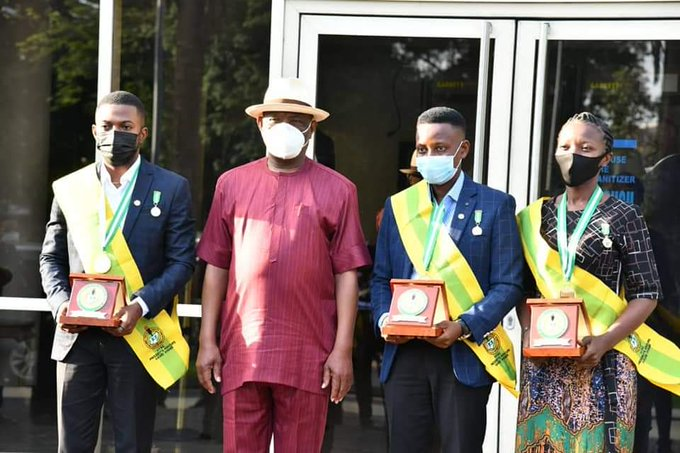

Gov. Wike Rewards 3 Rivers NYSC Presidential Honours Awardees – TheFact Daily
The governor of Rivers State, Mr. Nyesom Wike has offered automatic employment and scholarships up to Masters and Doctor of Philosophy degrees to three indigenes of the state. The beneficiaries were recipients of the National Youth Service Corps (NYSC) Presidential Honour Award, who had impacted positively on their communities of posting in their service year.